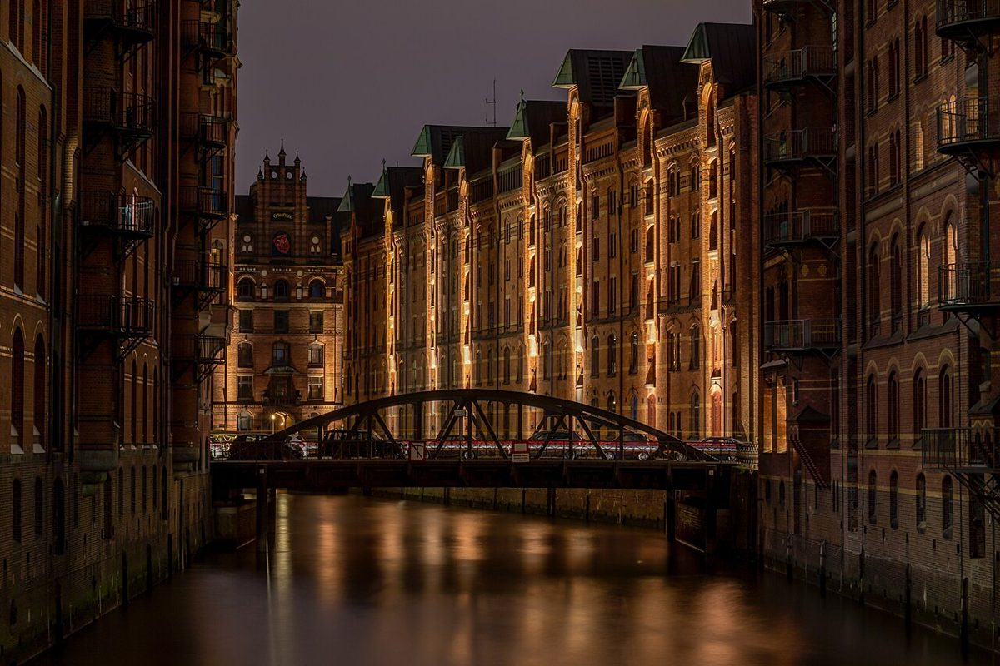

Hamburg Speicherstadt: Ein magisches Fleckchen in der HafenCity

Die Hamburger Speicherstadt ist ein Ort, der Geschichte, Architektur und moderne Kultur auf magische Weise vereint. Als UNESCO-Welterbe ist sie nicht nur ein Wahrzeichen Hamburgs, sondern auch ein Muss für jeden Besucher der Hansestadt. Erlebe hier die Verbindung zwischen Vergangenheit und Gegenwart, während du durch die beeindruckenden Backsteingebäude schlenderst und den Charme des Hamburger Hafens spürst.
Was ist die Speicherstadt?
Die Speicherstadt ist der größte zusammenhängende Lagerhauskomplex der Welt und wurde Ende des 19. Jahrhunderts erbaut, um Waren wie Kaffee, Tee und Gewürze zu lagern. Heute ist sie ein lebendiger Ort mit Museen, Boutiquen, Restaurants und Cafés, der Besucher aus aller Welt anzieht. Die historischen Lagerhäuser sind auf Pfählen gebaut, was sie besonders einzigartig macht.
Anreise zur Speicherstadt
Die Speicherstadt liegt mitten in der HafenCity und ist leicht zu erreichen. Per Bahn steigst du am besten an der Station U-Bahn Meßberg oder S-Bahn Stadthausbrücke aus. Von dort sind es nur wenige Gehminuten zu den Lagerhäusern. Auch per Fahrrad ist die Speicherstadt gut zu erreichen, und es gibt genügend Abstellmöglichkeiten. Wenn du mit dem Auto kommst, findest du in der Nähe einige Parkhäuser.
Beste Reisezeit
Die Speicherstadt ist zu jeder Jahreszeit einen Besuch wert, doch im Frühling und Sommer zeigt sie sich von ihrer schönsten Seite. Dann kannst du die Außenbereiche in vollen Zügen genießen und die Atmosphäre der nahegelegenen Elbe erleben. Im Dezember verwandelt sich die Speicherstadt in ein winterliches Märchenland mit dem traditionellen Weihnachtsmarkt, der besonders stimmungsvoll ist.
Highlights der Speicherstadt
Die Speicherstadt bietet zahlreiche Sehenswürdigkeiten und Aktivitäten. Hier sind fünf Highlights, die du nicht verpassen solltest:
- Miniatur Wunderland: Das größte Modelleisenbahnmuseum der Welt begeistert Groß und Klein mit detaillierten Nachbildungen von Städten und Landschaften.
- Speicherstadtmuseum: Tauche ein in die Geschichte des Lagerhauskomplexes und erfahre mehr über die frühere Nutzung der Speicherstadt.
- Dialog im Dunkeln: Ein einzigartiges Erlebnis, bei dem du die Welt mit allen Sinnen außer dem Sehen erkundest.
- Elbphilharmonie: Nur einen kurzen Spaziergang entfernt, ist das berühmte Konzerthaus ein architektonisches Meisterwerk, das du unbedingt besuchen solltest.
- Kaffeerösterei: Probieren Sie den aromatischen Kaffee, der direkt in der Speicherstadt geröstet wird. Ein Genuss für alle Kaffeeliebhaber!
Essen und Trinken
Die Speicherstadt bietet eine vielfältige Auswahl an kulinarischen Highlights. Ob du Lust auf traditionelle deutsche Küche, internationale Gerichte oder süße Leckereien hast – hier wirst du fündig. Besonders empfehlenswert sind die Fischrestaurants, die frische Meeresfrüchte und Fischgerichte servieren. Auch die vielen Cafés laden zum Verweilen ein und bieten perfekte Pausen beim Erkunden der Speicherstadt. Probier unbedingt eine typische Hamburger Spezialität wie Labskaus oder Franzbrötchen.
Fazit
Die Hamburger Speicherstadt ist ein Ort, der Geschichte und Moderne auf einzigartige Weise verbindet. Mit ihren beeindruckenden Lagerhäusern, vielfältigen Aktivitäten und kulinarischen Köstlichkeiten bietet sie für jeden etwas. Egal, ob du Geschichtsinteressierter, Kulturfan oder einfach nur auf der Suche nach einem schönen Ort zum Spazieren bist – die Speicherstadt wird dich begeistern. Plane deinen Besuch am besten in den wärmeren Monaten oder zur Weihnachtszeit, um das volle Erlebnis zu genießen.
Haiktec
- Effektiver Unterricht in 7 Schritten: Praktische Tipps für Lehrer & Nachhilfelehrer
- Baustellen-Kosten- und Arbeitszeit-Tracker für Handwerksbetriebe
- Zauberhafte Abenteuer im Schlummerland: 7 neue Gute-Nacht-Geschichten für kleine Träumer (3-8 Jahre)
Text mit KI erstellt und automatisch geprueft.